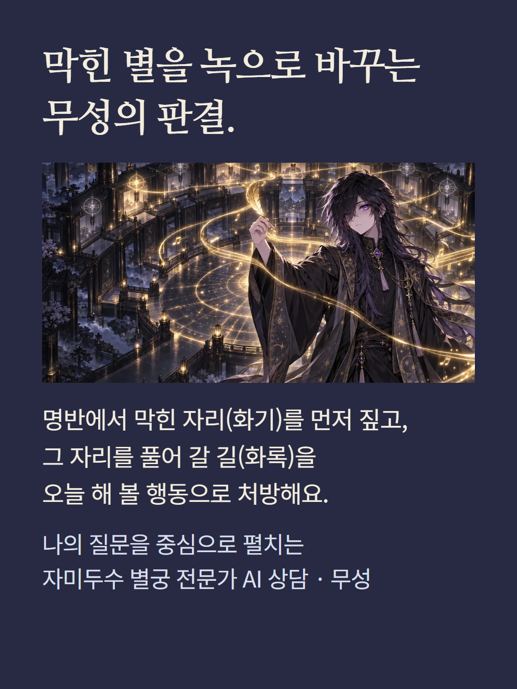
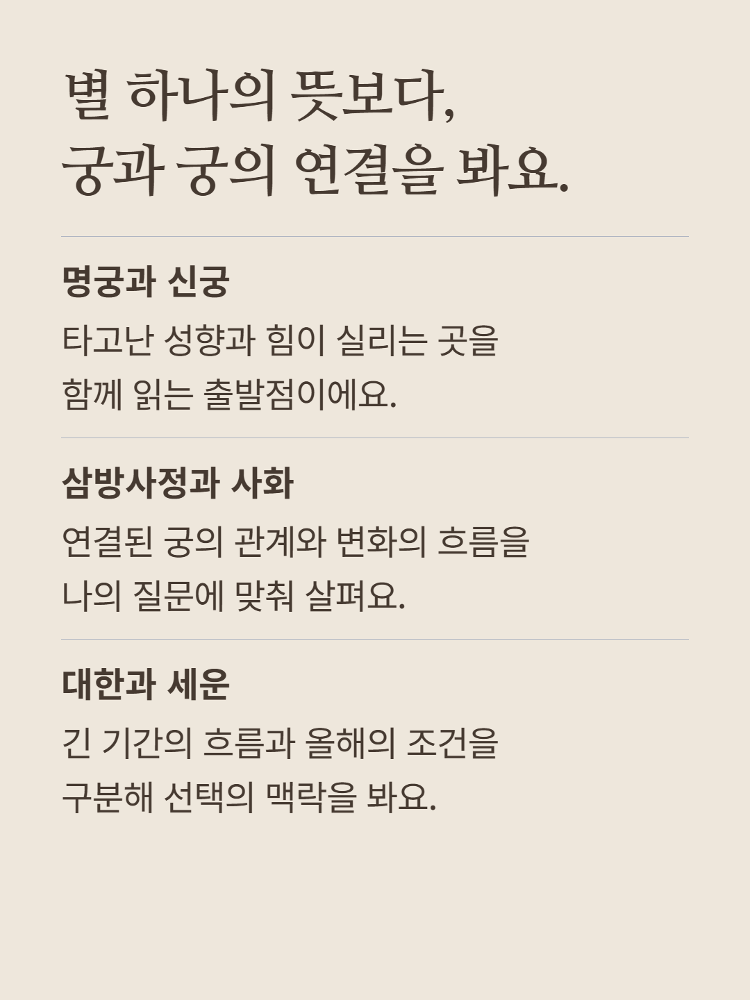
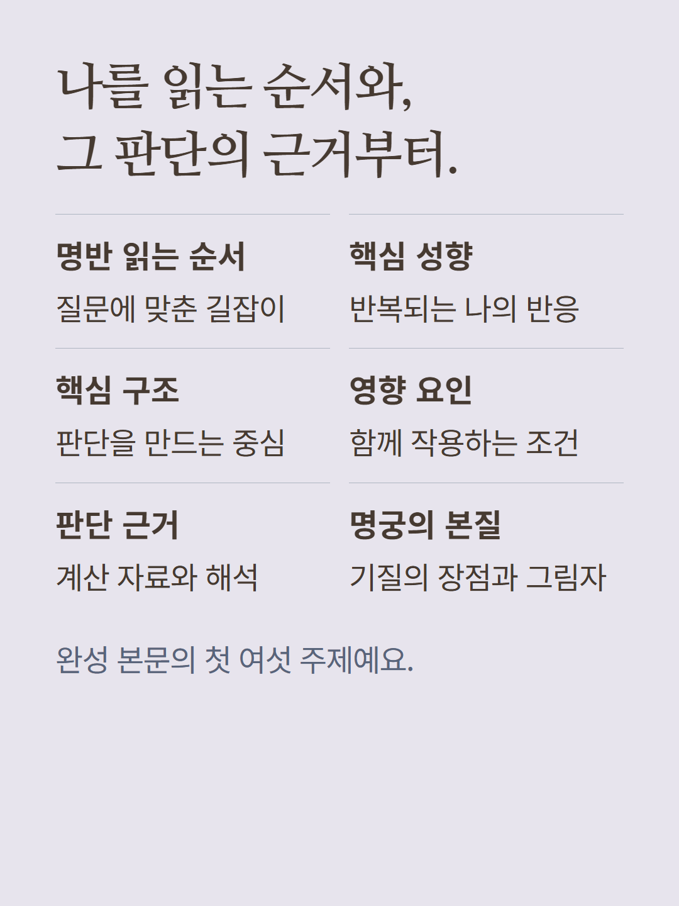
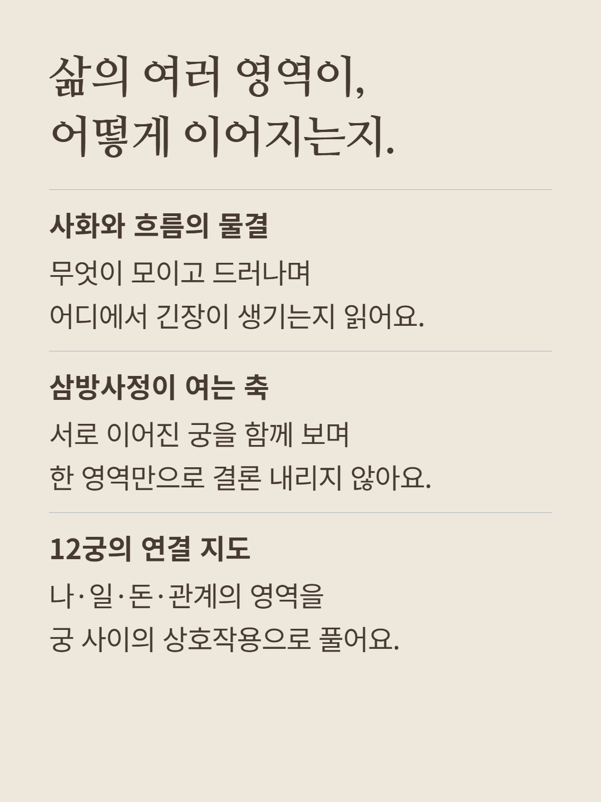
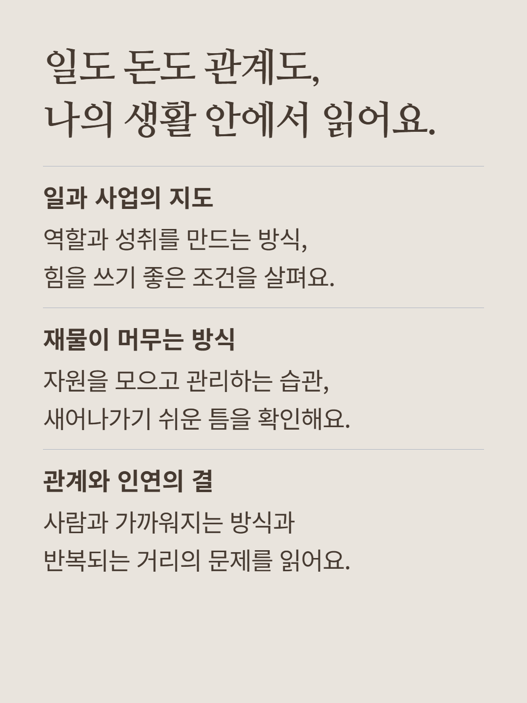
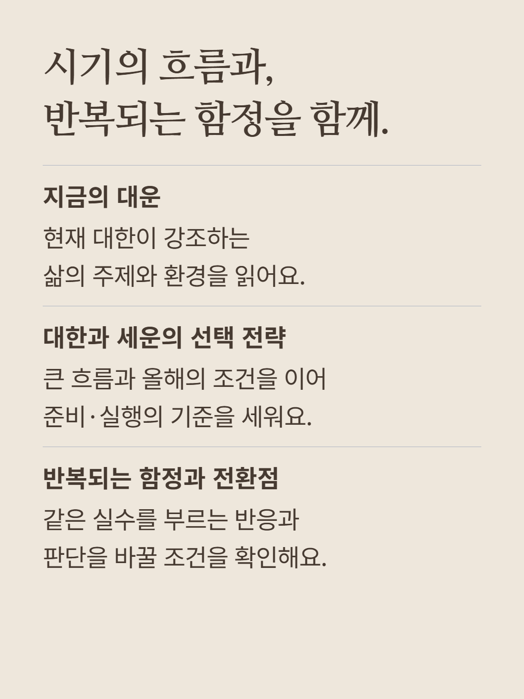
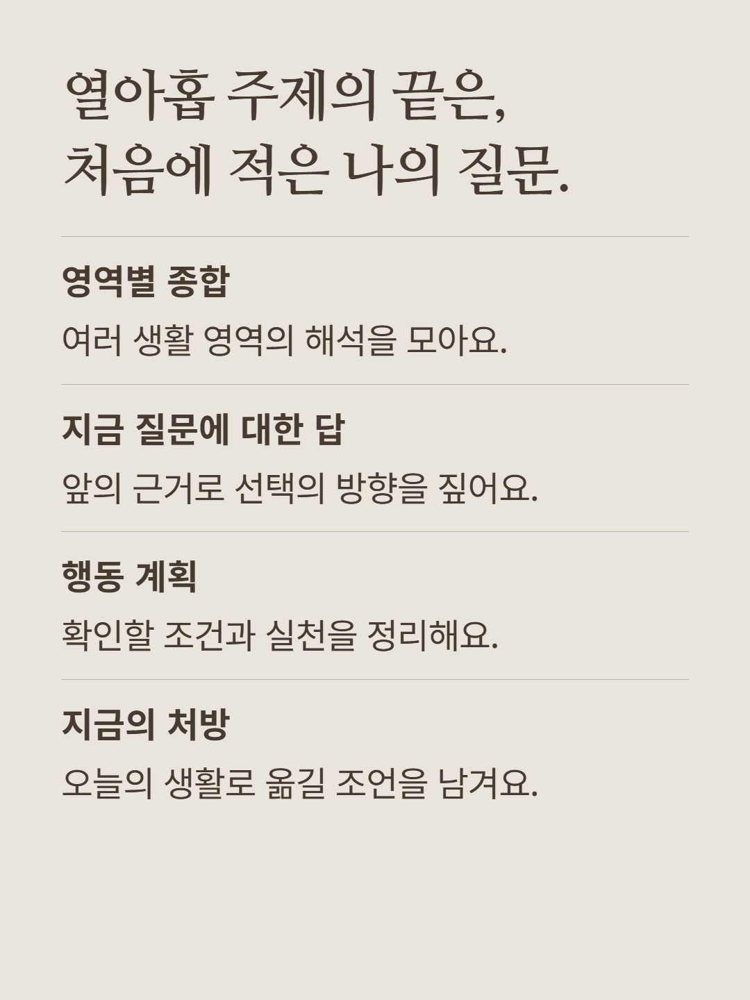
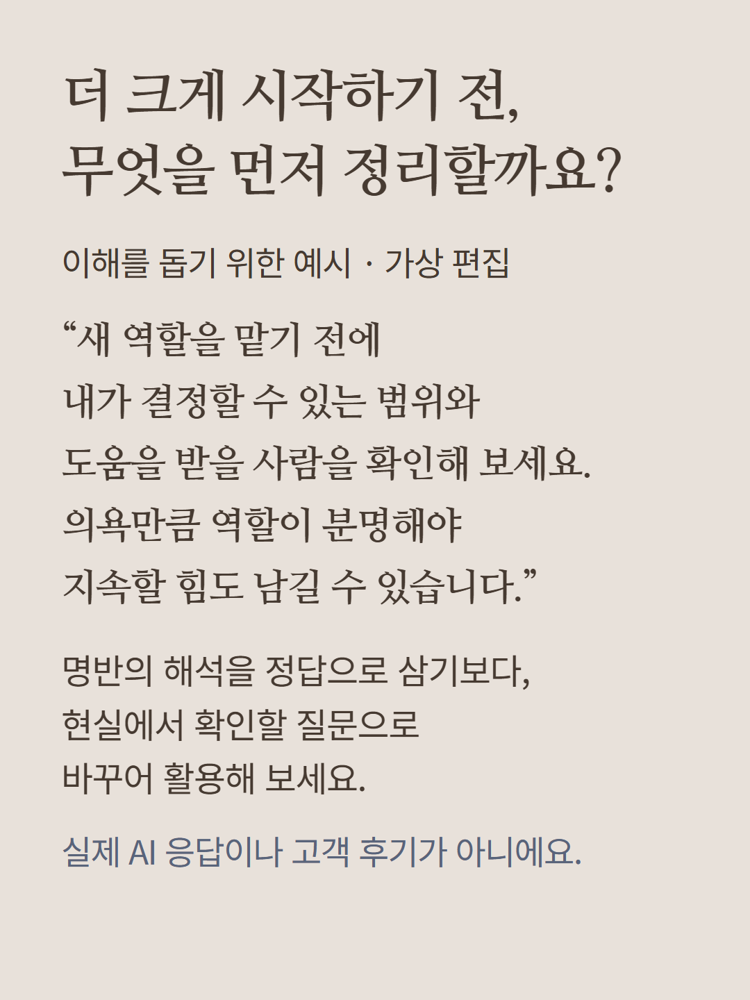
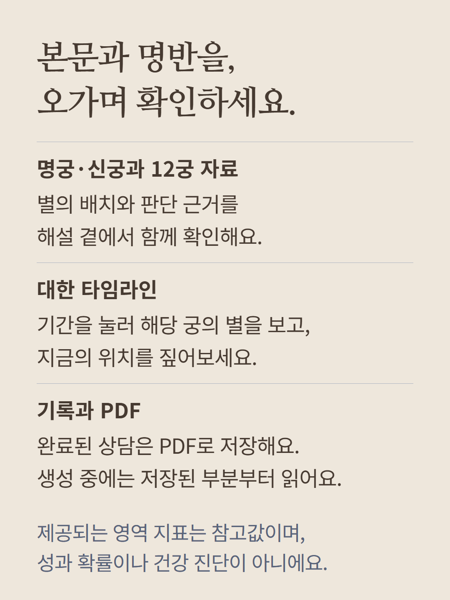
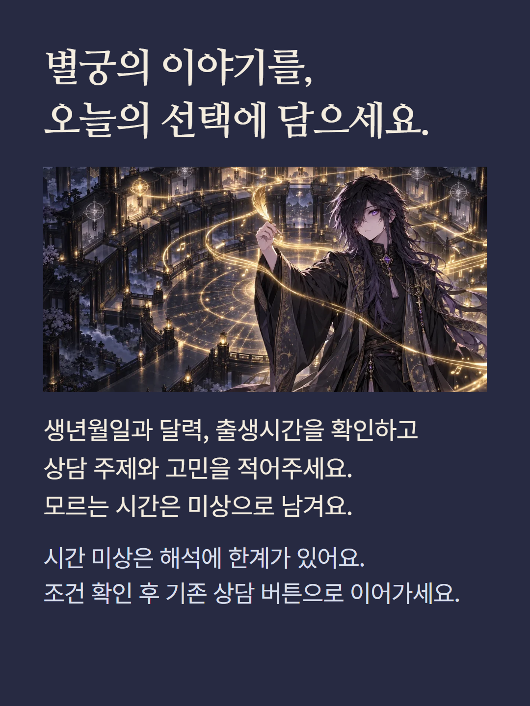

출생 정보와 상담 질문을 바탕으로 자미두수 명반을 계산하고 AI가 해설합니다. 완성 본문은 읽는 순서, 핵심 성향, 핵심 구조, 영향 요인, 판단 근거, 명궁의 본질, 사화, 삼방사정, 12궁 연결, 일과 사업, 재물, 관계, 현재 대운, 대한·세운 전략, 주의점, 영역별 종합, 질문의 답, 행동 계획, 처방의 열아홉 주제로 구성됩니다. 생성 중에는 저장된 부분부터 표시되며 미완료 상담과 완성 상담은 구분됩니다. 명궁·신궁·주성, 12궁 자료와 대한 타임라인, 계산 근거를 함께 확인합니다. 구조화 자료가 제공되면 영역별 참고 지표와 현재 대운 정보도 표시됩니다. 지표는 내부 참고값이며 성과 확률이나 건강 진단이 아닙니다. 완료된 상담은 PDF로 저장할 수 있습니다. 이름·성별·생년월일·양음력과 윤달·출생시간 또는 미상·상담 주제·최대 1,200자 질문을 입력하며, 출생시간 미상은 해석의 한계가 있습니다. 별도 기본 해금·질문 AI·심층 PDF 상품과 구분해 현재 조건을 확인해 주세요. 예시는 이해를 돕기 위한 가상 편집이며 실제 AI 응답이나 고객 후기가 아닙니다. 이미지는 분위기를 위한 연출이며 실제 명반의 예시가 아닙니다. 무성은 상담을 안내하는 캐릭터이며 상담 본문은 AI가 작성합니다.